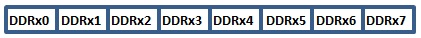

The AVR Microcontroller Digital I/O Ports
Introduction to AVR Digital Input/Output
Atmel AVR 8-bits microcontrollers provide pins to take in/output information form/to the outside world in the form of logic values. These pins are usually organised in groups of eight (8) and referred to as a port. The AVR use the alphabet to name these port, example PortA, PortB, etc. The figure below shows the pins of an AVR 8-bit microcontroller which has four (4) digital I/O ports: PortA, PortB, PortC and PortD. The pins of PortA are: PA0 - PA7.

Note
Notice the alternate name of the Ports pins. The AVR microcontollers are
designed to allow dual use of most of its pins. This has the advantage
of allowing a developer to use these pins as I/O pins if the function
they are provided for is not being utilized.
In this AVR tutorial we are only concern with the pins in there Digital I/O function, so for now just forget they have alternate capabilities.
Important
The pins of the AVR microcontroller are not fixed as input or output at
the manufacturing stage, these pins are software configurable which is
the topic of the section below.
Associated I/O Registers
Each of the AVR Digital I/O ports is associated with three (3) I/O register. A Data Direction Register (DDRx), A Pin Register (PINx) and a Port Register (PORTx). Where x is the port A, B, C, etc. .
DDRx - Port X Data Direction Register

DDRx is an 8-bit register which stores configuration information for the pins of Portx. Writing a 1 in the pin location in the DDRx makes the physical pin of that port an output pin and writing a 0 makes that pin an input pin.
Note: Each physical pin of a port is configured independently
and thus a port can have some of its pins configured as input an the
others as output pins.
PINx - Port X Input Pins Register
PINx is an 8-bit register that stores the logic value, the current
state, of the physical pins on Portx. So to read the values on the pins
of Portx, you read the values that are in its PIN register.
PORTx - Port X Data Register
PORTx is an 8-bit register which stores the logic values that currently being outputted on the physical pins of Portx if the pins are configured as output pins. So to write values to a port, you write the values to the PORT register of that port.
AVR Tutorials hope this AVR tutorial on the AVR microcontroller digital I/O ports was benificial to you and looks forward to your continued visit for all your microcontroller tutorial needs.